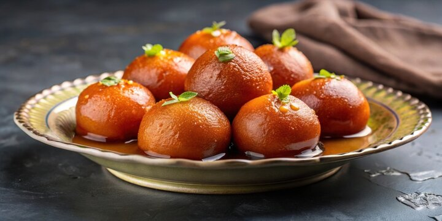

Home
Gulab Jamun Recipe

Description:
Gulab Jamun is a popular Indian dessert made from khoya (milk solids) and
soaked in sugar syrup flavored with cardamom and rose water. These soft,
round sweets are a festive favorite, often served during celebrations and
special occasions.
Ingredients
- 1 cup khoya (milk solids)
- 1/4 cup all-purpose flour (maida)
- 1/4 teaspoon baking soda
- 1/2 cup sugar
- 1/2 cup water
- 1/4 teaspoon cardamom powder
- 1 tablespoon rose water
- Oil for deep frying
- Chopped nuts for garnish (optional)
Steps
-
In a bowl, mix khoya, all-purpose flour, and baking soda to form a
dough.
- Divide the dough into small balls (about the size of a marble).
- Heat oil in a pan for deep frying.
-
Fry the balls on low heat until golden brown, ensuring even cooking.
- In another pan, combine sugar and water to make the syrup.
- Add cardamom powder and rose water to the syrup.
-
Once the balls are fried, soak them in the warm syrup for at least 30
minutes.
- Garnish with chopped nuts if desired.
- Serve warm or at room temperature. Enjoy your Gulab Jamun!